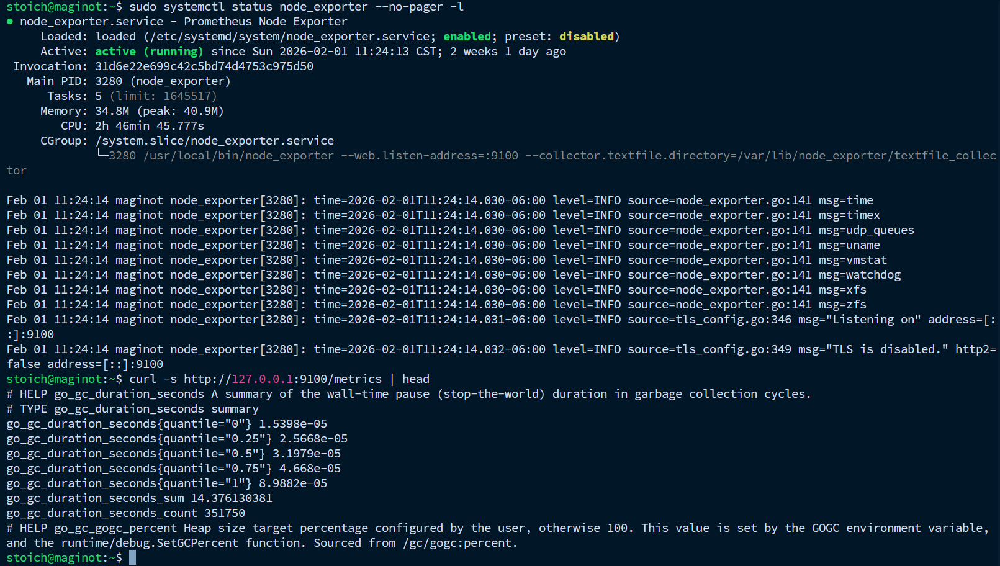
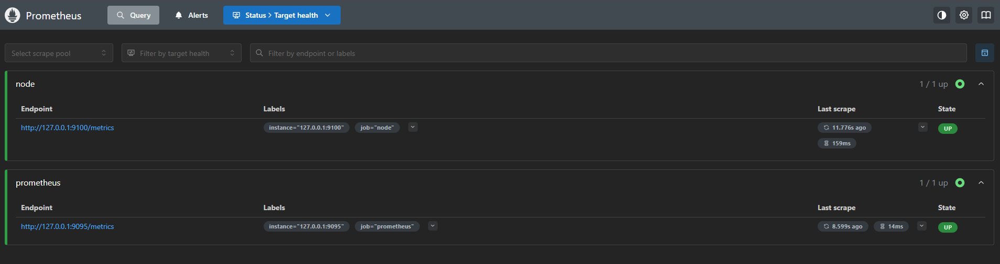
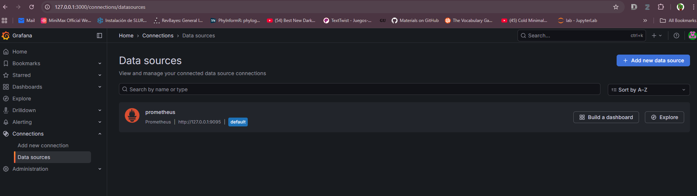
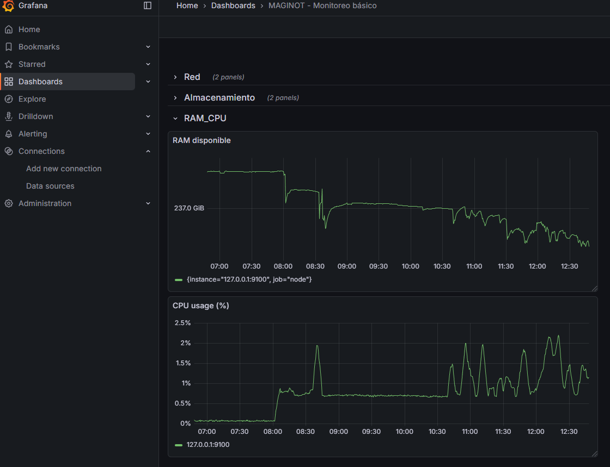
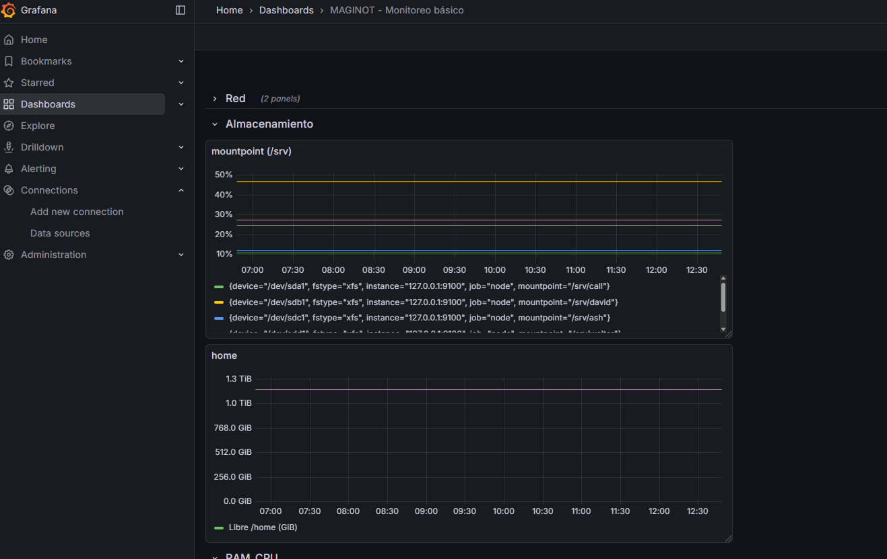
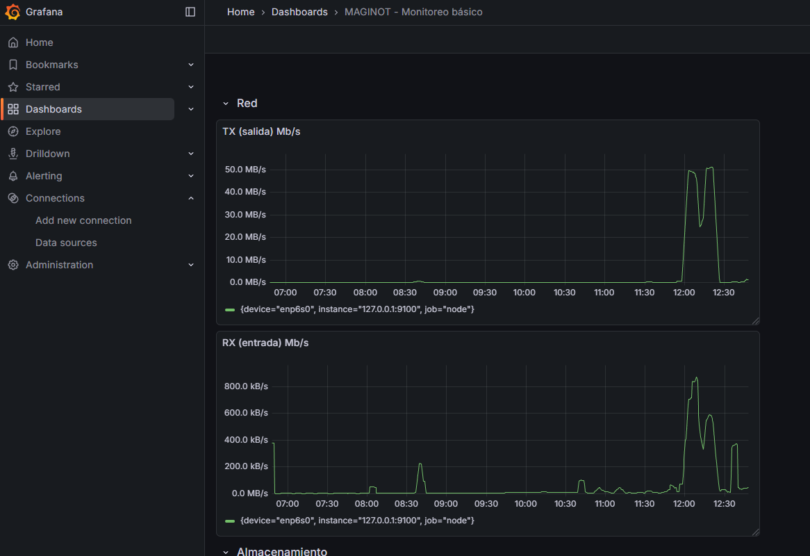

Monitoreo y Observabilidad
Contexto y objetivo
Este servidor Rocky Linux incluye Cockpit (Web Console) como interfaz web de administración. Además, se desea montar un stack de monitoreo clásico basado en:
- Node Exporter: expone métricas del sistema (CPU, RAM, disco, red, etc.) vía HTTP.
- Prometheus: recolecta métricas periódicamente, las almacena en una base de datos de series de tiempo (TSDB) y permite consultas con PromQL.
- Grafana: consume Prometheus como fuente de datos y permite crear tableros (dashboards) y alertas.
Objetivo: habilitar un sistema de monitoreo y observabilidad local (en el mismo servidor), manteniendo Cockpit como herramienta adicional de administración/diagnóstico, y configurando los puertos sin colisiones, con buenas prácticas de seguridad.
Node Exporter (métricas del host) en :9100
Crear usuario y directorios
sudo useradd --no-create-home --shell /sbin/nologin node_exporter 2>/dev/null || true
sudo mkdir -p /var/lib/node_exporter/textfile_collector
sudo chown -R node_exporter:node_exporter /var/lib/node_exporterDescargar e instalar el binario
cd /tmp
NE_VER="1.10.2"
NE_FILE="node_exporter-${NE_VER}.linux-amd64.tar.gz"
wget -O "${NE_FILE}" "https://github.com/prometheus/node_exporter/releases/download/v${NE_VER}/${NE_FILE}"
tar -xzf "${NE_FILE}"
sudo install -m 0755 "node_exporter-${NE_VER}.linux-amd64/node_exporter" /usr/local/bin/node_exporterCrear servicio systemd
sudo tee /etc/systemd/system/node_exporter.service >/dev/null <<'EOF'
[Unit]
Description=Prometheus Node Exporter
Wants=network-online.target
After=network-online.target
[Service]
User=node_exporter
Group=node_exporter
Type=simple
ExecStart=/usr/local/bin/node_exporter \
--web.listen-address=:9100 \
--collector.textfile.directory=/var/lib/node_exporter/textfile_collector
Restart=on-failure
[Install]
WantedBy=multi-user.target
EOF
sudo systemctl daemon-reload
sudo systemctl enable --now node_exporterPrueba local (métricas):
sudo systemctl status node_exporter --no-pager -l
curl -s http://127.0.0.1:9100/metrics | head
Prometheus (TSDB + UI) en :9095
Crear usuario y directorios
sudo useradd --no-create-home --shell /sbin/nologin prometheus 2>/dev/null || true
sudo mkdir -p /etc/prometheus /var/lib/prometheus
sudo chown -R prometheus:prometheus /etc/prometheus /var/lib/prometheusDescargar e instalar Prometheus
cd /tmp
P_VER="3.9.1"
P_FILE="prometheus-${P_VER}.linux-amd64.tar.gz"
wget -O "${P_FILE}" "https://github.com/prometheus/prometheus/releases/download/v${P_VER}/${P_FILE}"
tar -xzf "${P_FILE}"
sudo install -m 0755 "prometheus-${P_VER}.linux-amd64/prometheus" /usr/local/bin/prometheus
sudo install -m 0755 "prometheus-${P_VER}.linux-amd64/promtool" /usr/local/bin/promtoolConfiguración prometheus.yml
sudo tee /etc/prometheus/prometheus.yml >/dev/null <<'EOF'
global:
scrape_interval: 15s
evaluation_interval: 15s
scrape_configs:
- job_name: "prometheus"
static_configs:
- targets: ["127.0.0.1:9095"]
- job_name: "node"
static_configs:
- targets: ["127.0.0.1:9100"]
EOF
sudo chown prometheus:prometheus /etc/prometheus/prometheus.yml
sudo -u prometheus /usr/local/bin/promtool check config /etc/prometheus/prometheus.ymlServicio systemd (Prometheus en 9095)
Se omiten
--web.console.templatesy--web.console.librariespara evitar referencias a rutas no utilizadas.
sudo tee /etc/systemd/system/prometheus.service >/dev/null <<'EOF'
[Unit]
Description=Prometheus
Wants=network-online.target
After=network-online.target
[Service]
User=prometheus
Group=prometheus
Type=simple
ExecStart=/usr/local/bin/prometheus \
--config.file=/etc/prometheus/prometheus.yml \
--storage.tsdb.path=/var/lib/prometheus \
--web.listen-address=:9095 \
--web.console.templates=/etc/prometheus/consoles \
--web.console.libraries=/etc/prometheus/console_libraries
Restart=on-failure
[Install]
WantedBy=multi-user.target
EOF
sudo systemctl daemon-reload
sudo systemctl enable --now prometheusPrueba local
curl -s http://127.0.0.1:9095/-/ready && echoAbrir en navegador:
http://127.0.0.1:9095→ Prometheushttp://127.0.0.1:9095/targets(o “Status → Targets”) debe mostrarprometheusynodeen UP.

Grafana (dashboards)
Agregar repositorio e instalar (repo oficial RPM)
wget -q -O gpg.key https://rpm.grafana.com/gpg.key
sudo rpm --import gpg.key
sudo tee /etc/yum.repos.d/grafana.repo >/dev/null <<'EOF'
[grafana]
name=grafana
baseurl=https://rpm.grafana.com
repo_gpgcheck=1
enabled=1
gpgcheck=1
gpgkey=https://rpm.grafana.com/gpg.key
sslverify=1
sslcacert=/etc/pki/tls/certs/ca-bundle.crt
EOF
sudo dnf -y install grafana
sudo systemctl enable --now grafana-serverConectar Grafana a Prometheus
Entrar a
http://127.0.0.1:3000Data Source: Prometheus
URL:
http://127.0.0.1:9095Save & test

Dashboards y paneles implementados
En Grafana se importó un tablero base tipo “Node Exporter Full” como referencia y se añadieron paneles específicos para MAGINOT (por recursos y puntos de montaje relevantes).
Row 1: RAM / CPU
RAM disponible (GiB):
node_memory_MemAvailable_bytes / (1024*1024*1024)CPU en uso (%):
100 - (avg by(instance) (rate(node_cpu_seconds_total{mode="idle"}[5m])) * 100)
Row 2: Almacenamiento
Uso (%) por volúmenes en /srv/<volumen>:
100 * (1 - (
node_filesystem_avail_bytes{mountpoint=~"^/srv/[^/]+$", fstype!~"tmpfs|overlay|squashfs|devtmpfs"}
/
node_filesystem_size_bytes{mountpoint=~"^/srv/[^/]+$", fstype!~"tmpfs|overlay|squashfs|devtmpfs"}
))Disponible (GiB) en /home:
node_filesystem_avail_bytes{mountpoint="/home", fstype!~"tmpfs|overlay|squashfs|devtmpfs"} / (1024*1024*1024)
Row 3: Red
Salida (Tx, Mbps):
8 * rate(node_network_transmit_bytes_total{device="enp6s0"}[5m]) / 1e6Entrada (Rx, Mbps):
8 * rate(node_network_receive_bytes_total{device="enp6s0"}[5m]) / 1e6
Nota: Los paneles se configuraron con unidades (GiB, %, Mbps) y umbrales para visualizar estados de alerta (p. ej. uso de disco > 80%).
Firewall (abre sólo lo necesario)
sudo firewall-cmd --permanent --add-port=3000/tcp
sudo firewall-cmd --permanent --add-port=9095/tcp
sudo firewall-cmd --permanent --add-port=9100/tcp
sudo firewall-cmd --reload